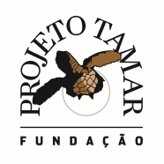
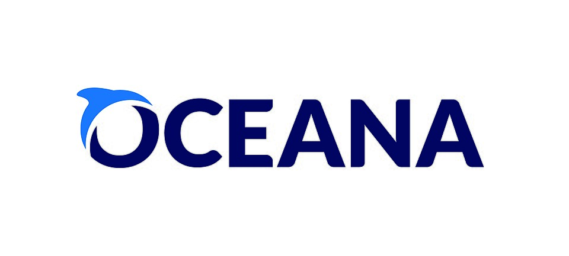

Projeto Tamar
O Projeto Tamar trabalha na proteção das tartarugas marinhas, preservando praias e conscientizando a população sobre a importância da vida marinha.
Saiba mais
Greenpeace
O Greenpeace atua mundialmente na proteção dos oceanos, combatendo a poluição marinha e defendendo os ecossistemas aquáticos.
Saiba maisSea Shepherd
A Sea Shepherd realiza ações de proteção da fauna marinha e combate à pesca ilegal, ajudando espécies ameaçadas.
Saiba mais
Oceana Brasil
A maior organização internacional focada exclusivamente na conservação dos oceanos, trabalhando para aumentar a biodiversidade e a abundância através de mudanças políticas.
Saiba maisGuardiões do Mar
Reconhecida internacionalmente pela restauração de ecossistemas, especialmente manguezais, com foco em ciência e comunidades locais.
Saiba maisAssociação MarBrasil
Dedica-se à conservação da rica biodiversidade dos ecossistemas marinhos e costeiros, agindo em prol do planeta.
Saiba mais